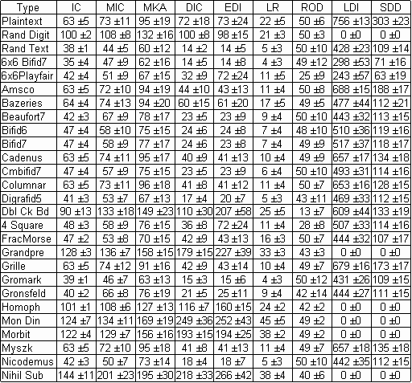
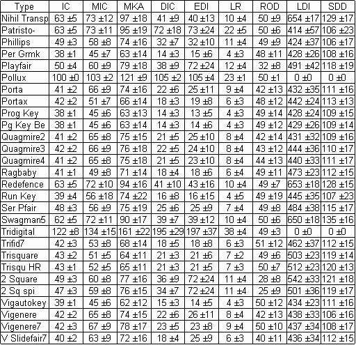

Here is a table of statistics for most of the ACA cipher types. The ciphertexts on which the statistics are based were generated by computer using 300 plaintext files. There were 50 files each of lengths 100, 200, 300, 400, 500, and 1000.
For details of the statistical measures see the notes at the end,
but briefly the 9 statistics are:
IC is the Index of
Coincidence multiplied by 1000.
MIC is the maximum
Index of Coincidence for periods 1-15, multiplied by 1000.
MKA is the
maximum kappa value for periods 1-15 , multiplied by 1000.
DIC is the Digraphic
Index of Coincidence, multiplied by 10,000.
EDI is the Digraphic
IC for even-numbered pairs, multiplied by 10,000.
LR is the
square root of the percentage of 3 symbol repeats, multiplied by 1000.
ROD is the
percentage of odd-spaced repeats to all repeats.LDI is AAHJU’s average
log-digraph score.
SDD is the average
Single letter-Digraph Discrepancy score.
Each entry in the table is the average value for the statistic followed by ± then the value of the standard deviation.

(page break in original)

Notes:
(1) The Index of Coincidence, IC, is given by
IC = SUM(freq(x)*(freq(x)-1)) / (L*(L-1))
Where freq(x) is the frequency of the symbol x, and L is the length of the ciphertext. For more details see [1] or [2]. Sometimes the IC is given in normalized form where the value from the above formula is divided by 1/n where n is the number of different symbols. n is thus 10 for numeric ciphers and 26 for alphabetic ciphers.
(2) For a given period P you can divide a cipher into P groups, calculate the IC for each group, then take the average of these P values. Doing this for all periods from 1 to 15 and selecting the maximum of these 15 values gives the MIC statistic in the table.
(3) For a given period P you can shift a cipher P places to the right, then find the percentage of symbols that coincide with those in the unshifted cipher. This percentage is the kappa value. Finding kappa for all periods from 1 to 15 and selecting the maximum value gives the MKA statistic in the table.
(4) The Digraphic Index of Coincidence (DIC) is calculated using the same formula as the IC but adding the frequencies of adjacent pairs of symbols from the ciphertext instead of single symbols. For alphabetic ciphers the number of different possible pairs is 26*26 = 676. And the number L in the divisor is now the number of pairs, which of course is one less than the length of the ciphertext.
(5) Calculating the IC for pairs that start at even-numbered positions 0,2,4... etc gives the EDI statistic in the table. The number L in the divisor is now the number of even pairs, which is the length of the text divided by 2. (Odd lengths ignore the last character).
(6) LR, the square root of the percentage of 3 character repeats, is described in “Identifying Fractionated Morse” in the MJ2002 issue of the Cryptogram. The article has a computer program for calculating LR. Also, see pseudo-code in (7).
(7) ROD, the percentage of odd-spaced repeats, is a new statistic.
Pseudo-code:
Initialize variables R3, sum_all, and sum_odd to zero.
For each character c in the ciphertext:
For each character d to the right of c in the
ciphertext:
Let n be the number of characters
for which strings starting at c and d are identical.
If n is more than one, increment
sum_all.
If c and d are also an odd
number of characters apart, increment sum_odd
If n is equal to 3, increment R3
ROD is equal to 100 * sum_odd / sum_all
LR is equal to 1000 * (square root of R3) / length of ciphertext
(8) LDI is the average value of the log digraph score using the scores found in AAHJU’s table from the computer column in the MJ2001 Cryptogram. AAHJU’s table is based on English language digraph frequencies. If a digraph has 1 or 2 non-alphabetic symbols we assign it a score of 0. Similarly for SDD.
(9) SDD is the average value of the Single letter-Digraph Discrepancy score using the scores found in my table from the computer column in the MA2003 Cryptogram. This table is also based on English language digraph and letter frequencies.
(10) Unless noted below, all ciphers that involve keysquares use horizontal routes.
Cipher type abbreviations: Rand Digit = Random Digits, Rand Text = Random Text, 6x6 Bifid7 = 6x6 Bifid with period 7, Beaufort7 = Beaufort with 7 letter keys, Bifid6 = Bifid with period 6, Bifid7 = Bifid with period 7, Cmbifid7 = CM Bifid with period 7, Digrafid5 = Digrafid with period 5, Dbl Ck Bd = Double Checkerboard, 4 Square = Four Square, FracMorse = Fractionated Morse, Homoph = Homophonic, Mon Din = Monome-Dinome, Myszk = Myszkowski, Nihil Sub = Nihilist Substitution, Nihil Transp = Nihilist Transposition, Patristo- = Patristocrat (K3 keys), Per Grmk = Periodic Gromark, Prog Key = Progressive Key with Vigenere coding at both stages, 7 letter keys and index of 1, Pg Key Be = Same as Prog Key except Beaufort coding at first stage, Quagmires use random key words of length between 5 and 13, Run Key = Running Key with Vigenere coding., Ser Pfair = Seriated Playfair with period 7, Swagman5 = Swagman with 5x5 keys, Trfid7 = Trifid with period 7, Trisquare = Trisquare with left route vertical, top route horizontal and middle route spiral, Trisqu HR = Trisquare with all horizontal key square routes, 2 Square = Two Square, 2 Sq spi = Two Square with left route horizontal and right route spiral, Vigautokey = Vigenere Autokey, Vigenere = Vigenere with random key words of length between 4 and 15. Vigenere7 = Vigenere with 7 letter key words, V Slidefair7 = Vigenere Slidefair with 7 letter keys.
References:
[1] Decrypted Secrets by F.L. Bauer, Springer 1997
[2] Basic Cryptanalysis, US Army Field Manual No 34-40-2